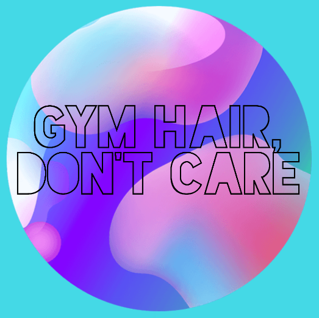
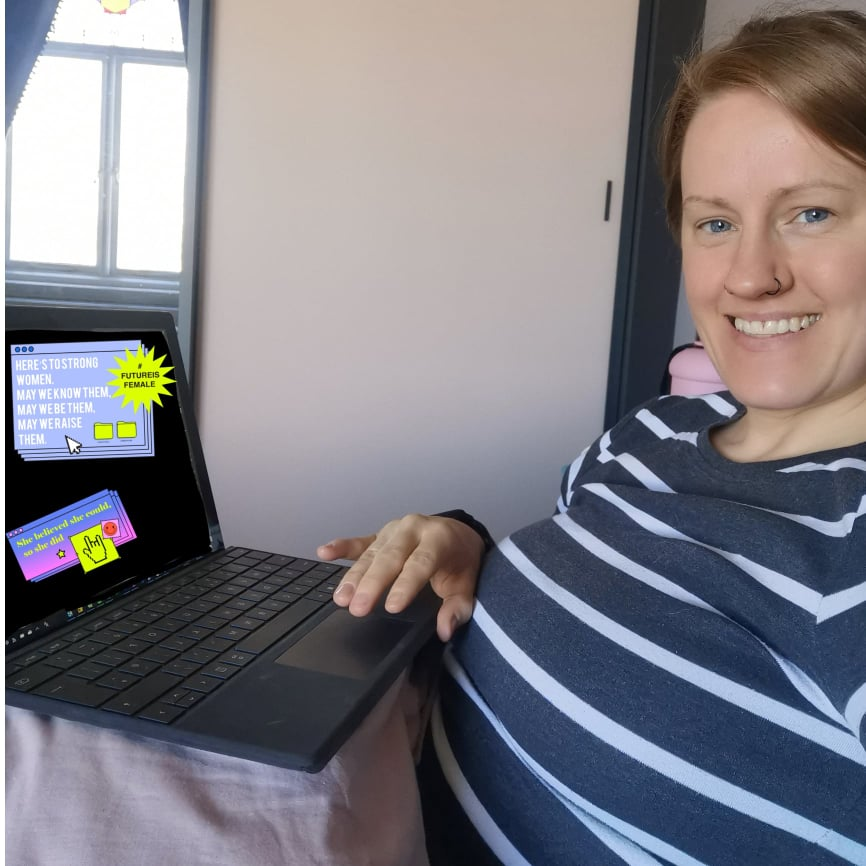
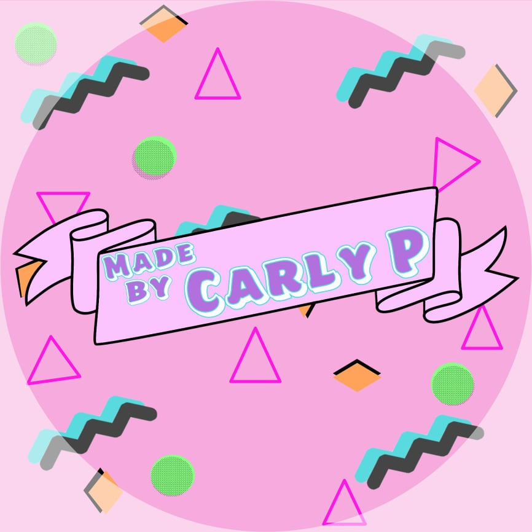

I created my Gym hair, don't care Facebook page in 2018 and it was mainly to blog my fitness journey. I was calorie counting and going to the gym. It then became much more than that, I openly dicuss my mental health struggles and I also share other parts of my life with my followers. I also have an instagram page and recently I started a group to allow the Gym hair, don't care community to be more open and allow for others to share their journeys too if they wish.

I started my journey in tech in November 2018, which was completely by accident as I'd been hoping to move to marketing. My place of work was going through a large transformation project and I was working in the comms team. I started supporting the Pega team and picked the work up super quick. I was asked to stay on instead of moving to marketing and within 6 months I had become a junior Pega Sytems Architect. Now in 2021 I am a Pega Certified Systems architect, and I am currently working towards my Senior SA certification.

I initially began crafting about 4/5 years ago, and I tried my hardest to make it into a little business. This was tough, and it was even tougher on my mental health. When I struggled to sell anything, I took this as a personal attack and I decided I couldn't craft anymore as the rejection I was feeling was just too tough. More recently I had the urge to start crafting again. This time I have instead decided to just craft for fun, rather than my end goal to be selling my pieces. So far, I am really enjoying it.